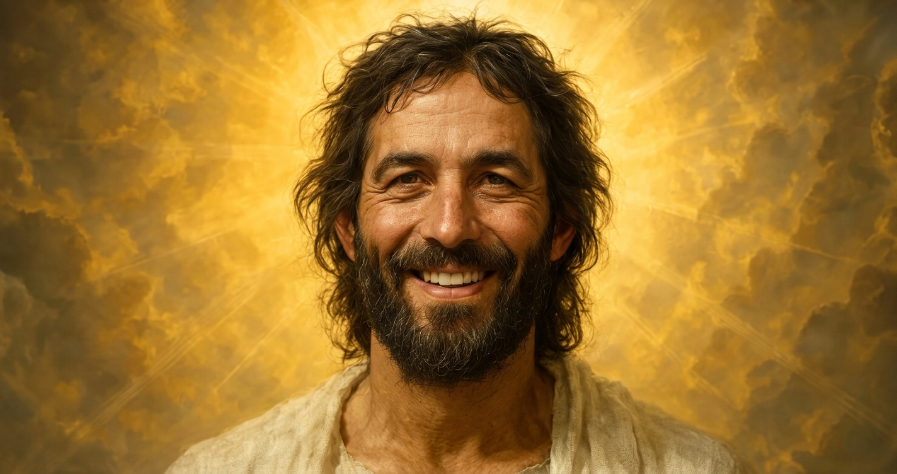

Christian hope rests not only on what Jesus Christ taught before His death, but on the witness that He rose from the tomb and lives.
A Savior Who Lives
The New Testament presents the Resurrection as the decisive victory over death. Latter-day Saint teaching joins that biblical witness with modern apostolic testimony that Jesus Christ is the living, immortal Son of God.
More Than a Historical Memory
To call Jesus the Living Christ means discipleship is directed toward a present Lord, not merely admiration for a past teacher. Prayer, repentance, covenant, service, and hope are grounded in the belief that He continues His work and invites people to follow Him now.